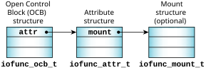
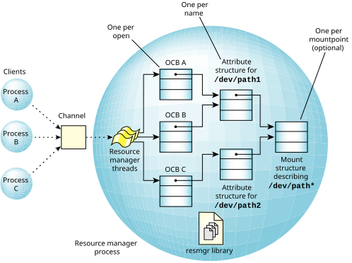
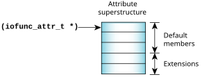

The resource manager library defines (in <sys/iofunc.h>) several key structures that are
related to the POSIX-layer support routines.
- iofunc_ocb_t
- The Open Control Block (OCB) maintains the state information about a particular session involving
a client and a resource manager.
For example, it's created during open() handling and exists until a
close() is performed.
It contains data such as the current position into a file (the lseek() offset)
and is used by the iofunc layer helper functions.
- iofunc_attr_t
- Since a resource manager may be responsible for more than
one resource (e.g., devc-ser* may be responsible for
/dev/ser1, /dev/ser2,
/dev/ser3, etc.), the attributes
structure holds data on a per-resource basis.
If the resource is a file, there's typically one attribute structure per name.
This structure contains such items as the user and group ID of
the owner of the resource, the last modification time, etc.
- iofunc_mount_t
- Contains per-mountpoint data items
that are global to the entire mount device.
Filesystem (block I/O device) managers use this structure;
a resource manager for a device typically won't have a mount structure.
Note:
Be sure to #include <sys/iofunc.h> before
<sys/resmgr.h>, or else the data structures won't be defined properly.
For information about what's in these structures, see their entries in the C Library Reference.
This picture may help explain their interrelationships:
Figure 1. How the data structures link to each other.

Here are some other examples that illustrate how these structures are used:
Three clients open two paths associated with a resource manager.
Each open has an OCB associated with it, and each path has its own attribute structure.
The data structures are linked like this:
Figure 2. Multiple clients with multiple OCBs, all linked to one mount structure.

- A process calls open() to open a serial port.
Here the file descriptor on the client side is associated with the OCB on the resource manager side,
and we can think of the OCB as
per-open
data (e.g., open mode/permissions on the device).
The OCB points to an iofunc_attr_t that corresponds to the named device,
and that attribute structure was associated with the device name at initialization time.
If the client issues a dup() on that file descriptor, there will be two client
file descriptors sharing the same OCB.
If the client or another process issues a new open() on the same device,
there will be a new file descriptor associated with a new OCB, but both OCBs will point to the
same attribute structure.
If the client process exits or closes both file descriptors, the OCB is freed, but the attribute structure remains.
- A process calls pipe() to create a pipe.
Here there are two file descriptors (for the read and write sides of the pipe) in the client, each associated with
a different OCB. There's also an iofunc_attr_t that was created dynamically to handle the
pipe() request and not associated with a name, and that will track and buffer
the pipe contents.
If the process that called pipe() then calls fork() so it can
write() data to the pipe for its child process to read(),
we will then have two file descriptors (one in each process) associated with each OCB,
and all four file descriptors associated through those two OCBs to the underlying attribute structure.
As the client processes close their file descriptors or exit, when both read file descriptors are gone,
the read OCB will be freed, and similarly for the write file descriptors.
And when both OCBs are gone, the attribute structure will, then, be released as well.
The iofunc_*() default functions operate on the assumption
that you've used the default definitions for the context block and the attributes structures.
This is a safe assumption for these reasons:
- The default context and attribute structures contain sufficient information for most applications.
- If the default structures don't hold enough information, you can encapsulate them within the
structures that you've defined.
The default structures must be the first members of their respective superstructures, so that the
iofunc_*() default functions can access them:
Figure 3. Encapsulating the POSIX-layer data structures.
